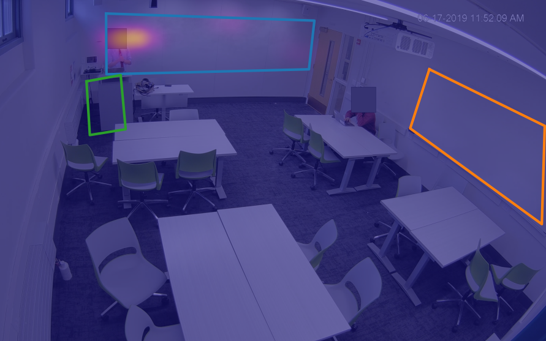
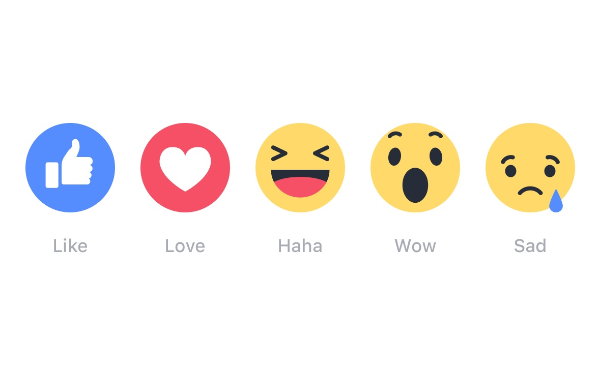
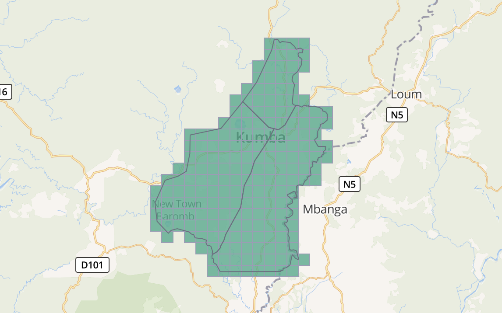

Hi! I'm Longjie Guo. 👋
longjie [dot] guo [at] wisc [dot] edu
I am a senior undergraduate student studying Computer Sciences and Psychology at University of Wisconsin-Madison and a research intern at the Software and Societal Systems Department at Carnegie Mellon University. I conduct research in human-computer interaction (HCI), social computing, and human-AI interaction.
Research

Professional Informatics in Classroom Sensing

Contextualized Feedback Affordances in Social Media Platforms

Contributor Dynamics in Volunteer Microtasking in Humanitarian
OpenStreetMap
News
08/30/22 I will be attending CSCW 2022 virtually as a student volunteer.
08/05/22 Wrapped up summer REU at
CMU S3D (formerly ISR).